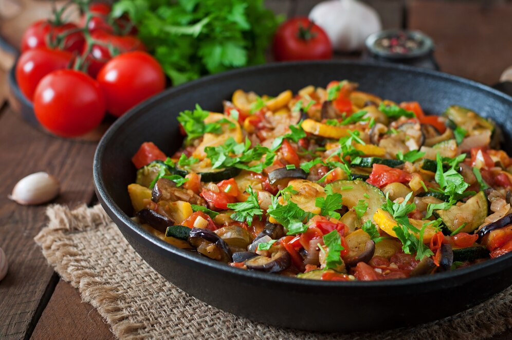

G
GourmeTech
Accueil
Ajouter une recette
Mes favoris
A propos
Tarte aux pommes
Dessert
60 min
Facile
Voir la recette

Ratatouille provençale
Plat
45 min
Moyen
Voir la recette
Velouté de potiron
Entrée
30 min
Facile
Voir la recette